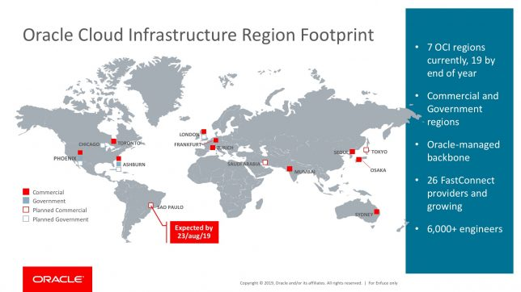
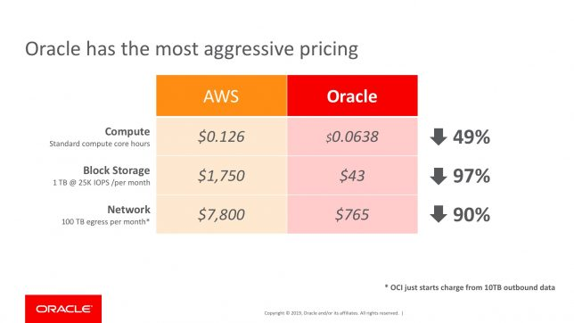
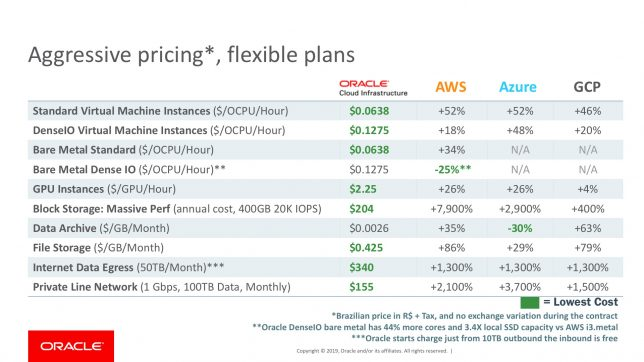
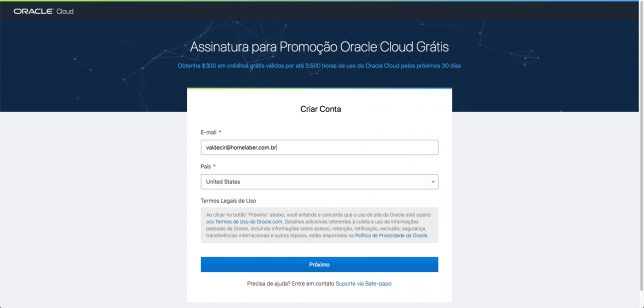
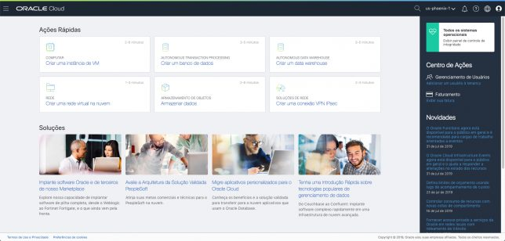
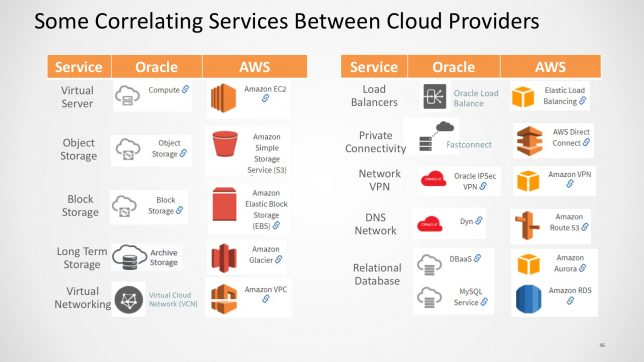

O que é Oracle Cloud Infrastructure?
Blog Cloud Oracle Cloud InfrastructureCompartilhe esse post nas redes sociais...
Olá Homelabers,
Hoje vou falar um pouco sobre a plataforma de cloud computing da Oracle, o Oracle Cloud Infrastructure ou simplemente OCI.
A Oracle vem apostando forte no segmento de cloud computing se posicionando como um grande concorrente no segmento de SaaS (Software as a Service), oferecendo como principal produto, seu famoso e já consagrado, banco de dados e também soluções que cobrem desde o small business até grande corporações que buscam migrar sua infraestrutura on-premise para a cloud.
Sendo bem realista, a Oracle é uma empresa de software - e não há vergonha alguma nisso - e de fato, a Oracle é MUITO boa quando se fala em SaaS, mas a real diferença da Oracle para seus concorrentes - AWS, Azure, GCP e IBM - é realmente o seu banco de dados, amplamente utilizado pelas maiores empresas do mundo.
Em um cenário onde grande parte da infraestrutura e sistemas de uma empresa roda sobre plataforma Oracle - Banco, Middle, Web, etc - em um momento de migração para a nuvem, escolher a Cloud da Oracle me parece uma alternativa bastante sensata e - isso é pura especulação minha - a Oracle deve ser MUITO agresiva (financeiramente falando) nesse momento com seus clientes, oferecendo diversas vantagens para que isso aconteça.
Oracle Cloud não é apenas Banco de Dados
A Oracle Cloud oferece toda uma gama de serviços que você espera de qualquer outro provedor de cloud: Compute, Storage, Networking, Security, DNS, Containers, etc.

E você ainda encontrará os principais softwares de negócios da Oracle - Cloud Applications - como ERP, Sistema de RH, Supply Chain, Analytics e outros.

Regiões
A Oracle Cloud Infrastructure está presente hoje em 7 regiões e vai chegar a 19 regiões até o final de 2019, incluindo aí o Brasil - que terá início no próximo dia 23/08.

Preços
Tenho que admitir que os preços da OCI me surpreenderam, de acordo com algumas pesquisas que eu fiz e com o material que tenho aqui, alguns serviços chegam a ser até 97% mais baixos do que na AWS.

Outra coisa que me chamou a atenção é que, diferente da maioria das outras clouds, o tráfego egress (tráfico de saída), só começa a ser cobrado a partir de 10TB mês.

Documentação
Pelo que pude ver, a documentação da OCI está bem completinha, mas não encontrei muito conteúdo em Português, as páginas principais estão localizadas para o Português Brasileiro, mas as páginas internas estão em Inglês.
Como começar a usar a Oracle Cloud Infrastructure?
A Oracle oferece $300 dólares em créditos grátis por até 3500 horas de uso da OCI por 30 dias, ou seja, você consegue conhecer e testar as principais funcionalidades sem gastar nada.
Para iniciar o trial, basta acessar a url https://cloud.oracle.com/pt_BR/home e preencher seu dados. Você vai precisar de um cartão de crédito válido para ativar a conta.

Depois disso, você terá acesso a sua console, onde poderá começar a se divertir.
Impressões e próximos passos:
Confesso que fiquei surpreso e positivamente impressionado com o avanço da Oracle Cloud Infrastructure, eu havia tido um contato inicial quando participei do Ravello Blogger Day em Redwood no começo de 2018, mas depois não olhei mais.
Acredito que a plataforma ainda tenha muito o que melhorar, mas também sei que a Oracle tem MUITO dinheiro e capital humano para investir e apostar na OCI.

A interface da console está super bonita, fácil de navegar e bastante intuitiva. Os serviços disponíveis estão em pé de igualdade com as outras opções do mercado e pelo que pesquisei, a Oracle está investindo muito para colocar a sua plataforma como uma excelente opção no mercado corporativo, que está cada vez mais migrando seus workloads para cloud.
Pretendo ler a documentação, subir alguns workloads e fazer alguns testes para me ambientar mais com a plataforma além disso pretendo explorar:
* Ferramenta de linha de comando
* Migrações de workloads do ambiente on-prem (meu lab) para Cloud - ida e volta
* Entender e testar os recursos de IaC, principalmente Terraform
* Conhecer as APIs do serviço
* Integrações com outras ferramentas do mercado - backup, fw, etc.
Comunidade
Quem acompanha o blog, sabe que eu sou um “Community Lover”, adoro participar e me involver com comunidades, e a Oracle - por iniciativa de algumas pessoas do Brasil (Beijo Weligton) - tem uma comunidade bastante ativa no Telegram, e que já ultrapassou 500 usuários.
Estou acompanhando o grupo e deu para perceber que tem bastante gente competente e que conhece do assunto e também NOOBS como eu que estão começando a ter os primeiros contatos com a plataforma. Então fica a dica, participe da comunidade GUOCB - Grupo de Usuários Oracle Cloud Brasil no Telegram.
Mais informações:
Vou deixar aqui alguns links para que você possa explorar um pouco mais sobre o Oracle Cloud Infrastructure.
* Conceitos Básicos - [https://cloud.oracle.com/pt_BR/iaas/getting-started](https://cloud.oracle.com/pt_BR/iaas/getting-started)
* Oracle Cloud Jump Start - [https://cloud.oracle.com/pt_BR/jumpstart](https://cloud.oracle.com/pt_BR/jumpstart)
* Soluções - [https://cloud.oracle.com/pt_BR/iaas/solutions](https://cloud.oracle.com/pt_BR/iaas/solutions)
* Mapeamento de Serviços - [https://cloud.oracle.com/pt_BR/iaas/cloud-service-mapping](https://cloud.oracle.com/pt_BR/iaas/cloud-service-mapping)
* Documentação - [https://docs.cloud.oracle.com/iaas/Content/home.htm](https://docs.cloud.oracle.com/iaas/Content/home.htm)
* Cloud Infrastructure Blog - [https://blogs.oracle.com/cloud-infrastructure/](https://blogs.oracle.com/cloud-infrastructure/)
* Preços - [https://cloud.oracle.com/pt_BR/iaas/pricing](https://cloud.oracle.com/pt_BR/iaas/pricing)
* Calculadora - [https://cloud.oracle.com/pt_BR/cost-estimator](https://cloud.oracle.com/pt_BR/cost-estimator)

Conte nos comentários, você já usa OCI? Já usou? Está pensando em usar?
Até a próxima!
Compartilhe esse post nas redes sociais...Valdecir Carvalho
Nerd e pai orgulhoso da Mariana e João. Profissional Sênior de TI com foco em arquitetura de infraestrutura e cloud computing. Blogueiro, podcaster, palestrante, amante de comunidades técnicas, fotógrafo aposentado e adora jogos antigos.
#vExpert · #VMUGLeader · #VUGBrasil · #vBronwBagBrasil · #VeeamVanguard